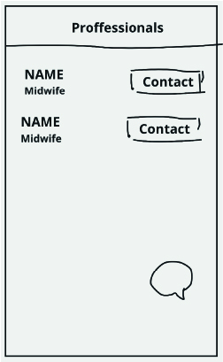

Baby Time
The Problem
The goal was to make a product to help new parents, mothers in particular, to have a better time after giving birth in the hospital as mental health issues and stress is high in this demographic.
Responsibilities
The team collaborated on everything.
Team
Julie Habbestad
Kareem Sarieldin
Time span
5 weeks
The process
We used design thinking to guide us through this process.

Empathize

Define

Ideate

Prototype

Test
Understanding the Problem
In order to get a better idea of the problem, we used the following research approaches:
Literature review
Interviews
Affinity mapping
Research Summary
- Many parents are very unsure about everything during the first weeks of having a baby. At the same time, many women feel like they are not getting adequate help/care after birth in the maternity ward.
- Many people do not want to burden the hospital staff, so they do not ask for help, especially when the nurses seem busy or are not receptive to their questions.
- Many parents become increasingly uncertain because of all the different information they read and hear about online. Therefore some feel like it is important to learn the basics and not delve too deep to not get stressed.
- Many parents are focused mainly on the day of the birth. They are often not prepared for what comes after. This situation could create a negative impact on their experience.
- The parents feel anxious and worried because of the lack of information from the hospital or not getting adequate time to answer their questions or even ask the right questions.
- Women need to get an adequate debriefing about the birth as part of the recovering process that helps with mental and physical challenges they went or might go through.
Key Insights
Insight 1
To help new parents/mothers relax and not feel anxious, they need access to professional staff that dedicates time to answer all their questions during the day.
Insight 2
New Parents/mothers need to access information about their baby's general health that helps them relax.
Insight 3
New Parents/mothers need to have a solid tailored information guide about after-birth.
Insight 4
Parents need to have Time-management tools for their baby's medical controls/regular check-ups/vaccinations.
Persona

Context Scenario
- This is the first day of Sarah as a new mother. She spends the night constantly thinking about her new-born baby and how to breastfeed since the nurses didn't explain how to do it correctly.
- Sarah also had a difficult birth and struggling to relax. She is exhausted after the birth and overwhelmed by what she went through. Now, the baby in her arms and thinking, "What should I do now?". While she was pregnant, all she could think about was up to the point of birth, not what comes after.
- Now she is waiting and expecting that the nurses will come and give her feedback. Since the birth, the nurses seem very busy. Sarah is hesitant to ask them about the things she is unsure about. Eventually, she decided to get some answers, and when she finally asked the nurse, the reply came rushed and unclear. She felt unwelcomed to ask more questions.
- Sarah is stressed and unsure about what she is doing. She feels she is left on her own without any support, not as she anticipated.
- She is worried that she isn't able to get all the answers before going home. Questions constantly pop up, and she doesn't know what to ask. She is worried that if she doesn't get enough information, something could go wrong, like in the articles she has read online.
- She is unsecured about going home with new-born baby, also afraid that she wouldn't be able to do things right, and unable to respond fast if the baby is sick or needs help.
Problem Statement
New mothers are feeling extremely overwhelmed after giving birth because they are struggling to access the necessary information from nursing staff when needed. If we can solve this problem, they would feel more safe and confident and reduce their mental stress.
How Might We
- How might we help Sarah being confident in asking the right questions?
- How might we give her a reassurance that everything is good?
- How might we make her relax after giving birth?
- How might we help her process her emotions after the birth?
- How might we reduce cognitive load for new parents?
- How might we prepare parents better for the time after the birth?
Ideation Process
We took the time to reflect on our persona, user scenarios and problem statement. Then used HMW questions to fuel our ideation sessions to generate ideas that could solve the users pain points. Here are the methods we used:
Mindmapping
Brainstorming
Sketchmapping
Mindmapping
We mindmapped seperately to get the ideas flowing before the brainstorming sessions.


Brainstorming
We conducted two seperate brainstorming sessions in the timespan of two days.

Divergent Thinking
In the first session we focused on generating as many ideas as possible.

Convergent thinking
The second day we came back and voted on the ideas we liked the best and discussed.
Sketchmapping
In order to explore the ideas further we decided to start visualizing the ideas we generated by sketching together.

The idea
Growth Chart

Track baby development with highlight of baby health level.
Information

Access to credible information that helps mothers, parents and newborn.
Cognitive Load

Ability for users to consume the information in different forms, by reading, listening, and watching.
Calender

Parents have control of their baby's scheduled visits to doctors, health stations, and vaccines.
Talk to professional
Parents have control of their baby's scheduled visits to doctors, health stations, and vaccines.
Help parents relax and support their journey by:
Providing them with information on each stage of development.
Informing them about the most common problems/issues they might encounter.
Providing reminders and time-management tools for their baby's medical controls/regular check- ups/vaccinations.
Let them be able to compare their baby's physical development by comparing it to a set of standard values. These will be inputted manually.
Competitive Analysis
Before we started developing the idea further we did a competitive analysis of three different related apps.

Sitemap
Now we decided on the structure of the app by creating a site map.

Flowchart
Here we decided on the structure of the app.

Task Flows
We created task flows focusing on each of the apps features.

Persuasive Design
We thought about persuasive design when designing.

Visceral
Through our design will have straight forward simple design using recognized icons that does not require textual explanation.
Behavioral
The user can easily reach information and have control of choosing the form of learning methods to reduce cognitive load.
Users have an overview of their children's development with reassuring messages.
Users have easy access to professional help.
Overall: Users have complete control and track of their children's healthcare and development in one place.
Reflective
Users feel safe and confidant dealing with their children's development.
Users are proud to have the knowledge and capability to take care of their children.
Users can educate others on what they learn about baby steps and milestones.
Sketching

Wireframing
Low-fidelity

Mid-fidelity

High-Fidelity


Usability Testing
After creating the mid-fidelity wireframes, we conducted the first round of usability testing with only two participants. The first round of testing showed that we had to fix few usability issues. In the second round of testing had 5 participants.
Tasks
Go and find information on breastfeeding
Add a check-up to the calender
Ask about a vaccination in the chat
Book an appointment with a midwife
Update your babies weight
Explore the app and tell me your thoughts
Key Insights
Insight 1
We need to add reassurance to those that don’t fit into the average
Insight 2
We have to conduct more research with midwifes and nurses
Insight 3
There is a collection of “small” things that should be improved
Insight 4
Overall the participants thought the app was very nice